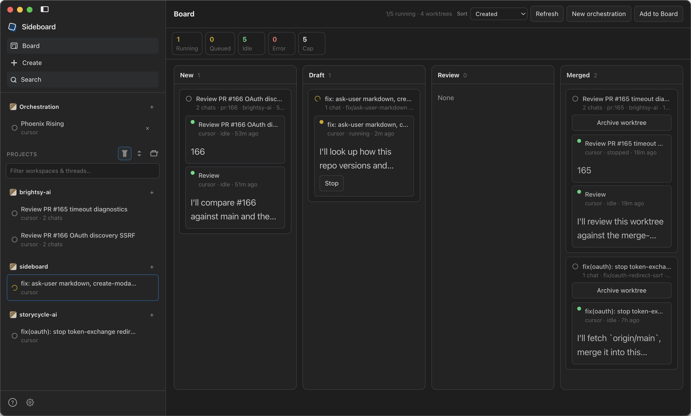
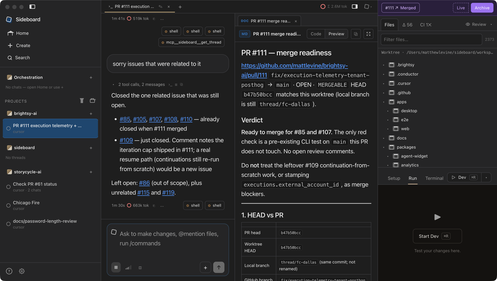

On your Mac, on the network you already sit on. I built Sideboard because one agent per worktree is solved — what's missing is the tier above it: an agent that can reason about the other threads, a board where I can see them, and Slack so a coworker can step in. Without moving the repo into someone else's cloud.
npm i -g @sideboard-ai/cli
Auto-updating · the CLI and MCP run without the app.

The global board: every worktree as a card — New, Draft, Review, Merged — with live status in the sidebar.

One worktree chat: the agent thread in the middle, artifacts and schema tabs beside it, the git repo on the far right.
Status, live output and fan-out across every thread. One agent per thread/* worktree, all of them in one view instead of eight terminal tabs.
List threads, wait on turns, read diffs, fork worktrees, schedule jobs that wake an orchestrator — and open panes in the desktop. The orchestrator is an agent too, and it can see the whole fleet.
DM or @mention the orchestrator from anywhere. It can ping a coworker to review a PR a worktree just pushed; their reply comes back as information, not a command, and the orchestrator continues.
Spawning worktrees is the shared primitive. Conductor put the fleet-orchestration tier in a paid cloud. Sideboard puts that tier on the Mac I already use, on the VPN it is already on.
Mechanical control — list, send, diff, land — stays on the CLI and costs zero tokens. MCP is for when an agent needs judgment across threads.
Peer-by-peer compare| Job | Typical tools | Sideboard |
|---|---|---|
| Orchestrate the fleet, agent-visible | Human board, or a cloud API | MCP + global board, on this Mac |
| Stay on the corporate VPN | Cloud sandboxes leave it | Agents run as you, on this network |
| Coworker in the loop | Product cloud or shared sandbox | Slack review ping, reply comes back |
| Keep going when you step away | Cloud sandbox keeps running | Slack to this Mac — opt-in caffeinate |
| Run work on a schedule | Cloud cron / always-on sandbox | Local jobs; opt-in caffeinate so they can fire |
| Drop into the native CLI mid-session | Weak, or one-way | attach keeps the same session |
| Recurring process guides | Locked in the product, or chat memory | Committed .claude/skills — Claude Code and attach load them |
| Bring existing worktrees in | Stuck, or start over | adopt + Conductor import |
| Work on main in the project folder | Always a sidecar worktree, or no rail | Opt-in cowboy (off by default) |
| Data the agent invents | Spreadsheet, CMS, or markdown forever | Schema → form, beside the diff |
Agents write code and they invent data shapes — content, configs, feedback, ops rows. A worktree chat is repo, worktree and structured data in one view, without bolting on a CMS.
The worktree agent driving that branch — Claude Code, Codex, OpenCode or Cursor. Nested Task / Agent work streams in a card under the parent tool.
Artifacts, a JSON Schema rendered as table or form, and a file manager. Tabs stick per chat until you close them.
Files, Changes, CI and Review, plus Setup, Run and Terminal for the connected worktree.
Board, send, inspect, attach when I want the native CLI, land when it's ready. Landing on the default branch is blocked (unless you opt into cowboy mode), dirty worktrees need an explicit confirm, and there is no --yes on land.
sideboard detect sideboard new --from branch:main --agent claude sideboard send <thread> "add a README note" sideboard diff <thread> sideboard attach <thread> sideboard land <thread>
Not the product. Install the CLIs you want on your PATH and sideboard detect reports what it can see. Cursor runs through the official SDK.
Register the MCP with any of them — claude mcp add --scope user sideboard -- sideboard mcp — and that agent can see the fleet from outside Sideboard too.
DMs and @mentions reach the global orchestrator on this Mac. What stays here: agents, worktrees, repos and secrets, including anything only reachable on the VPN. What leaves: Slack message text, through the relay.
work: check the failing CI
@sideboard personal: ship it
Each Mac is its own destination. The machine has to stay awake — Settings → Advanced → Caffeinate while Slack Listen is on, or turn on caffeinate from the orchestration chat when you step away. Set up Slack
You already run several local CLI agents on a Mac — especially one on a corporate VPN — and you want an orchestrator you can see, an agent can drive, and Slack can reach. Extra fit when the agent produces structured content or HTML that should sit next to the diff.
You want a polished local board and will never touch CLI or MCP (Conductor free), you want their paid cloud workspaces that keep running after the laptop closes, you live in an IDE-native agents window, or you're on Windows or Linux.